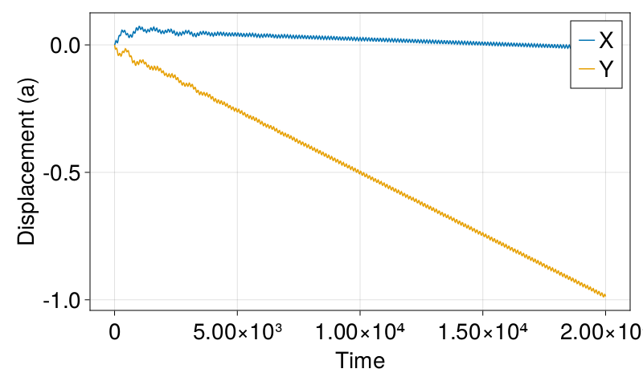
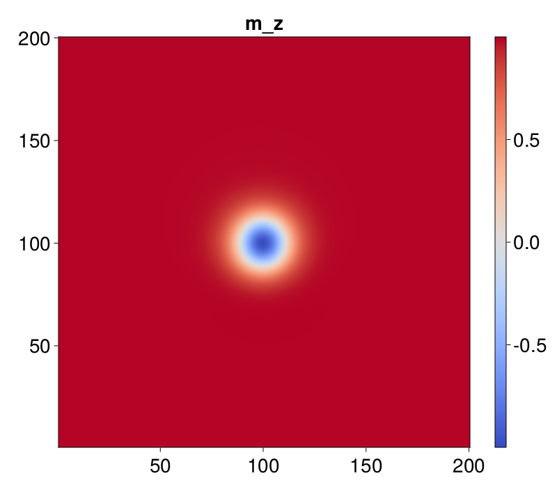
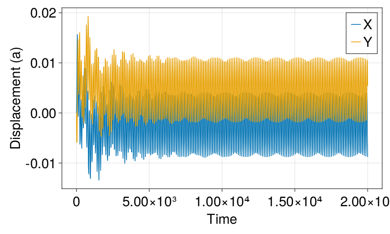
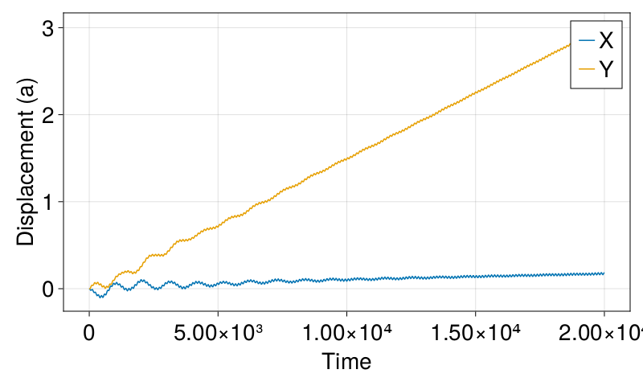

Skyrmion dynamics under high-frequency lasers


In this work, we will try to repeat figure 2 using dimensionless units, i.e., $J = \hbar = \gamma = S = a = 1$ in the simulation.
| Parameter | Value |
|---|---|
| Lattice constant | $a = 1$ |
| Spin length | $S = 1$ |
| Gyromagnetic ratio | $\gamma=1$ |
| Magnetic moment | $\mu_s = 1$ |
| Excahnge constant | $J = 1$ |
| DMI | $D/J = 0.09$ |
| Magnetic field (static) | $H_0 = 0.00729$ |
| Magnetic field (laser) | $H = 0.18$ |
| Frequency of laser | $\omega = 10$ |
| Magnetoelectric coupling strength | $\lambda c/\mu_s = 0.1$ |
| Gilbert damping | $\alpha=0.04$ |
using JuMag
using Printf
using NPZ
using DelimitedFiles
using CairoMakie
JuMag.cuda_using_double(true)We define a function to roughly initialize a skyrmion
function m0_fun(i, j, k, dx, dy, dz)
r = 25
if ((i - 100)^2 + (j - 100)^2 < r^2)
return (0.05, 0.01, -1)
end
return (0,0,1)
endm0_fun (generic function with 1 method)We create a function to describe the basic setup of the problem
function basic_setup(;driver="SD", m0=(0,0,1))
mesh = CubicMeshGPU(nx=200, ny=200, nz=1, dx=1, dy=1, dz=1, pbc="xy")
sim = Sim(mesh, driver=driver, name="skx")
set_mu_s(sim, 1)
init_m0(sim, m0)
add_exch(sim, 1, name="exch")
add_dmi(sim, 0.09, name="dmi")
Hz= 0.00729
add_zeeman(sim, (0,0,Hz))
return sim
endbasic_setup (generic function with 1 method)We define a function to relax the system to get a skyrmion
function relax_system()
sim = basic_setup(m0=m0_fun)
relax(sim, maxsteps=5000, stopping_dmdt=1e-5, using_time_factor=false)
npzwrite("skx.npy", Array(sim.spin))
save_vtk(sim, "skx")
endrelax_system (generic function with 1 method)We relax the system to see whether the skyrmion is created.
if !isfile("skx.npy")
relax_system()
endWe define a function to move the skyrmion using lasers
function drive_skyrmion(;alpha=0.04, omega=10.0, dt=20.0, steps=1000, delta = pi, direction=110, basename="empty")
sim = basic_setup(m0=npzread("skx.npy"), driver="LLG")
sim.driver.alpha = alpha
sim.driver.gamma = 1
lambda = 1.0;
E = 0.1; H = 0.18;
add_magnetoelectric_laser(sim, lambda, E, H, omega, delta=delta, direction=direction)
isdir("assets") || mkdir("assets")
f = open(basename*".txt", "w")
for i = 0:steps
t = dt*i
println("running at $t")
run_until(sim, t, save_data=false)
Rx, Ry = compute_guiding_center(sim)
write(f, "$t $Rx $Ry\n")
end
close(f)
npzwrite(basename*".npy", Array(sim.spin))
enddrive_skyrmion (generic function with 1 method)We define a function to plot the skyrmion position
function plot_XY(filename)
data = readdlm(filename*".txt")
ts, X, Y = data[:,1], data[:,2], data[:,3]
fig = Figure(resolution = (800, 480), fontsize=28)
ax = Axis(fig[1, 1],
xlabel = "Time",
ylabel = "Displacement (a)"
)
lines!(ax, ts, X.-X[1], label="X")
lines!(ax, ts, Y.-Y[1], label="Y")
axislegend()
save(filename*".png",fig)
return fig
endplot_XY (generic function with 1 method)We define a function to plot mz
function plot_mz(basename)
m = npzread(basename*".npy")
m0 = reshape(m, 3, 200, 200)
mz = m0[3, :, :]
fig = Figure(resolution = (800, 700), fontsize=28)
ax = Axis(fig[1, 1], title="m_z", aspect = 1)
hm = heatmap!(ax, 1:200, 1:200, mz, interpolate=true, colormap = :coolwarm)
Colorbar(fig[:, end+1], hm)
save(@sprintf("%s_mz.png",basename),fig)
return fig
endplot_mz (generic function with 1 method)We run the simulation for delta=0 and direction=110
alpha=0.04; omega=10.0; direction = 110;
delta = 0
basename = @sprintf("assets/pos_alpha_%g_omega_%g_delta_%g_direction_%03d", alpha, omega, delta/pi, direction)
if !isfile(basename*".txt")
drive_skyrmion(alpha=alpha, omega=omega, delta=delta, direction=direction, basename=basename)
end
plot_XY(basename)
We plot mz to check it's still a skyrmion
plot_mz(basename)
The skyrmion failed to move with delta = 0 and direction = 111
direction = 111
basename = @sprintf("assets/pos_alpha_%g_omega_%g_delta_%g_direction_%03d", alpha, omega, delta/pi, direction)
if !isfile(basename*".txt")
drive_skyrmion(alpha=alpha, omega=omega, delta=delta, direction=direction, basename=basename)
end
plot_XY(basename)
Finally, we check the case for delta = pi and direction = 110
delta = pi; direction = 110
basename = @sprintf("assets/pos_alpha_%g_omega_%g_delta_%g_direction_%03d", alpha, omega, delta/pi, direction)
if !isfile(basename*".txt")
drive_skyrmion(alpha=alpha, omega=omega, delta=delta, direction=direction, basename=basename)
end
plot_XY(basename)
This page was generated using DemoCards.jl and Literate.jl.